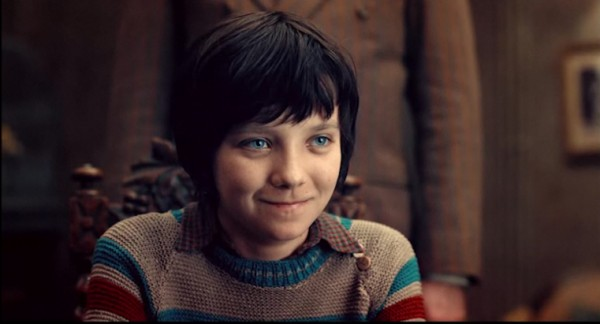
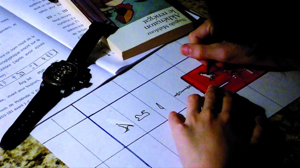

-
Scenes of Instruction
by Jonathon Kyle Sturgeon February 22, 2012

I.
Is cinema neurotic? Certainly it is prepossessed by images of its own death and Oedipal strangeness. Let’s examine the year’s critical darlings.
First, there’s Hugo. Martin Scorsese’s ultra-Oedipal pop-up book depicts the travails of an orphan whose maltreatment functions as a cipher for the neglect of film. Painfully self-aware, Hugo mutates into a curious essay featuring George Méliès, Hugo’s substitute father who is also a Father of Cinema. The subject of the essay? The childhood of film and its probable death by decay.
If Hugo presages film’s eventual death, then Uncle Boonmee Who Can Recall His Past Lives hosts its funeral and digital afterlife. In Apichatpong Weerasethakul’s Palm d’or winning take on the Phaedo, the dying Uncle Boonmee — like Hugo, a stand-in for celluloid — is visited by a gallery of filmic shades who help him realize that repressed memories of death and murder lie at the root of his fatal illness. When Boonmee dies, his digitalized survivors learn to duplicate themselves like image files, in effect transferring generational struggle from the Oedipal (fathers and sons) to the technological (filmic shades to digital copies).
In Melancholia, there is no afterlife. Although Lars von Trier’s unsparing demolition of the European family expands into an allegory about the state of the states of the world, Melancholia is also a fairy tale about the entrapment of magical thinking, the neuroses transferred between mothers and fathers to their children, and, most importantly, the failure of our instruments of vision — cinema — to prevent the slow crawl of an ever encroaching gloom.
And Melancholia wasn’t the only film to link the family drama with cosmic death as a form of cinema. In Terrence Malick’s The Tree of Life, a contemporary man-without-qualities revisits his childhood by way of an overwrought fantasia, one where his own Freudian hang-ups (struggle with father, sexual adulation of mother) are superimposed over the juvenescence and cold death of the entire solar system.
II.
Caught between the death of film and a digital childhood, in a neutral era, and beset with interactivity and the proliferation of digital imaging technologies, it would appear that cinema has developed a debilitating neurosis. In recent years, cinema found itself torn from the (photographic) indexicality that sutured its relation to memory and history. Indexicality ensures a certain family resemblance between the image and its material source. Without this family resemblance, it seems, cinema became unsure where it came from or where it might be headed. It simply no longer had complete faith in either its instruments of vision or its predictive faculties. As a result of this bad faith, film has become preoccupied with that which overwhelms basic human capacities: accidents, disasters, superheroes. On the other end of the spectrum, film began to rely on the archival power of Arks and museums. To put the whole issue more succinctly, cinema is now wrestling with its digital unconscious, or as Godard says in his own Ark-work, Film Socialisme:
We’ve entered into an era with the digital wherein, for different reasons, humanity will be confronted by problems which will not have the luxury of being expressed.
And yet, if cinema is in a neurotic, even hysterical state, in 2011 it also found itself in the throes of a talking cure. The aforementioned films, alongside minor works like The Artist and The Future, show cinema in a spectator position, one that visits the very sites of its production: scenes of birth (George Méliès in Hugo) and childhood (the silent era in The Artist) and telluric death. Even this telluric death must be understood as an act of self-excavation on the part of cinema, for the colliding planets and collapsing stars of 2011 were always seen through telescopes or other instruments of vision (Melancholia, The Tree of Life, and Nostalgia for the Light).
III.
The neurotic condition of cinema is literalized in extremis by David Cronenberg’s excellent A Dangerous Method. If in 2011 cinema was prone to fits of transference, that is, if cinema redirected its anxiety in the form of unwieldy fantasias and shifting subject positions, Cronenberg’s film plays out as a meta-commentary, like an analyst’s tidy notes regarding the condition of the analysand. A Dangerous Method is, for lack of a better expression, Melancholia‘s shrink.
Like Melancholia, A Dangerous Method explores the relationship between the caring and the cared-for. Cronenberg uses wide angles and split-diopter shots to frame his neurotics, thus maintaining a doctoral, even totalizing gaze, in opposition to Von Trier’s ecstatic, trembling eye. His faith in these instruments of vision leads him to a startling discovery: a paradox that cuts deep into the skin of contemporary cinema. The paradox of A Dangerous Method is precisely not one of repressed anxieties regarding childhood and death. Instead, as the title suggests, it is one about method and pedagogy. Cronenberg’s film slyly substitutes the relationship between doctor and patient for an analogous one between master and pupil.
Cronenberg’s Jung is beholden to Freud because of his position as father of psychoanalysis and master pedagogue. Freud, who is searching for an intellectual heir, likewise needs Jung, who, in the process of breaking away, also teaches Freud a lesson on the power of class. Add to the mix a few sermons on the perils of sexual repression delivered by the self-professed neurotic Otto Gross — who later became a major anarchist thinker — and the sex-and-death epiphanies of the once hysterical Sabina Spielrein: it all amounts to an Olympiad of pedagogical gamesmanship.
In A Dangerous Method, the lessons exchanged by Freud, Jung, Gross, and Spielrein are inextricable from their neuroses. The childhood events that shaped them, their sites of production, are excavated as memories and translated through the talking cure. This process of excavation and translation transforms these memories into pedagogical material: sites of production become, literally, scenes of instruction. And so Sabina Spielrein metamorphoses from hysteric to brilliant student to thriving (and pregnant) psychoanalyst. Yet the film concludes at an impasse, a fascinating deadlock with repercussions for the age of extremes that followed Freud and Jung, one borne of an almost unconscious debate within contemporary cinema. In the film’s final moments, Jung accuses Freudian psychoanalysis of suspending its patients in ignorance, of keeping them “squatting like a toad” — an allusion to Milton’s Satan — at the mercy of an equally ignorant analyst. To go further, one must actually teach the patient the method for curing his neurosis: Jung believes this should be the goal of psychoanalysis. Cronenberg, who obviously sides with Freud, shrewdly links Jung’s modus operandi with the rise of Fascism. Against Jung, the cure offered by Freud (and by extension, Cronenberg) is not a prescription forced onto a patient. It instead resides in an invitation to autonomous activity. The cure for neurosis lies in the patient’s act of translating his illness through the language of childhood memories.
IV.
The debate at the heart of A Dangerous Method has begun to contour the form of individual films. In fact, the year 2011 in cinema was characterized by the ascension of a particular strain of pedagogical form — the essay film — within the body of narrative cinema. Even a sidelong glance at the year’s critical favorites confirms the renewed vigor of the essayistic. At least five of Film Comment’s top twenty films of last year are heavily essayistic in structure (The Tree of Life, Uncle Boonmee, Hugo, Nostalgia for the Light, and Film Socialisme.) In Film Comment’s 2010 list? Zero.
The rise of the this genre is well documented in Timothy Corrigan’s new book The Essay Film (2011). Corrigan formulates the essay film as a:
1) testing of expressive subjectivity
2) through experiential encounters in a public arena,
3) the product of which becomes the figuration of thinking as a cinematic address and a spectatorial response.In other words, the essay film is a kind of thinking-out-loud through images, one that results when subjectivity is questioned in a public encounter. Given the transitional nature of cinema and the Hulu-ification of its public, it is no wonder that cinema has taken to the essay form to express its neurosis. A similar formal development occurred with the rise of video and television, the apotheosis of which was Godard’s Histoire(s) du cinéma. Godard’s essay, instead of merely lamenting (as we do now) the loss of celluloid, attempted to think through this loss by reconstituting the cinematic image with a fraternity of metaphors: the symbols and icons collected by cinema among other arts, as well as the infinite number of linkages between them. Godard accomplishes this feat, as Jacques Rancière points out in The Future of the Image, by having his images “appear, vanish, intermingle” according to the operations of video. Through this process of translating between images, of thinking through cinema, Rancière says, “Godard fashions the cinema that has not existed.” That is, until the current reprisal of the essay film. It is telling that Godard’s masterwork, still the preeminent essay film, finally found American distribution in 2011, thirteen years after its initial release.
The third part of Corrigan’s formulation, concerning cinematic address and spectatorial response, is perhaps the most salient with regard to the resurgence of the essayistic. This is because matters of address and response characterize the relationship between doctor and patient, master and pupil. Although not itself an essay film, A Dangerous Method taps into this current. The film works as a kind of framing device, one that magnifies a temporary split within the essay form.
On one side of this divide is what we might call the Jung school. These films, among the most neurotic, advocate a heavy-handed didacticism, one that tries to hide its lesson within narrative camouflage. Deeply neurotic works like Malick’s The Tree of Life and Scorsese’s Hugo are narratives only in the cosmetic sense. Beneath the surface, Malick’s film is a theodicy that defends the existence of an America torn between nature and grace. And Hugo is simply a film studies monograph disguised as a children’s story.
The Jung school seeks to cure cinema by forcefully realigning the spectator within a given tradition. This is why Hugo becomes a lecture on film preservation, one where the protagonist confesses his disturbing wish to find his place as a cog in the great machine of the world. In Malick’s case, the proposed tradition is a species of American pragmatism. In particular it is a pragmatism preached by his mentor, the philosopher Stanley Cavell. The critical obsession with locating Malick within the Western philosophical tradition (Heidegger and Cavell) should itself be seen as a symptom characteristic of the Jung school, one that privileges the hierarchical position of master-pedagogues over ignorant students. Amazingly, Cavell, who is really the Malick of philosophy, had at least two adulatory pieces on his teacherly charisma published this year alone. All things being equal, the dominance of The Tree of Life in 2011 tells us only one thing about contemporary cinema: its critics are everywhere in search of a master.
The search for a master helps explains why so much of critical response to The Tree of Life often took the shape of the apologia, that classical form of religious pedantry. The exemplar of this approach was Adrian Martin’s Manichean defense of The Tree of Life in FIPRESCI, “Great Events and Ordinary People,” where he assures dissenters that the film is a perfect auto-summary, a monadological masterpiece wherein each moment explains all others. Hilariously, by way of a neurotic hiccup, Martin then embarks on the first harrowing steps of his own talking cure. He wonders aloud whether his namedropping of Western philosophers might be getting in the way of his appreciation of the films:
Most articles on Malick (mine included) like to heavy-hit from the outset with a prefatory nod to a Great and Deep Philosopher: Heidegger, Plato, Weil, Cavell…Yet, while we know that Malick has swam in these waters, I wonder whether, with the years, he has also worked (this is pure speculation) to divest himself of some good deal of this apparatus of learning…this cultural and intellectual sophistication.
Next, as if to confirm cinema’s obsession with childhood and talking-cure-stage neurosis, Martin whispers the secret hidden within the heart of every critic enthralled by The Tree of Life. He likens Malick’s film to Eden before the animals were named, before our adult identities are fixed, badly congealed, inescapably neurotic. It is like reading Daniel Stern’s The Interpersonal World of the Infant, with its system of ‘emergent senses of self’ all co-existing in the same growing child, that lurks around forever despite our best efforts at erasure and repression.
V.
Positioned against The Tree of Life and its apologists is Jean-Luc Godard’s Film Socialisme, the best of what I’m calling (after Cronenberg’s A Dangerous Method) the Freud school, which presupposes the egalitarian nature of intelligence, the capacity of the spectator to translate between unlike things.
In a press conference for the film, Godard cited Jacques Rancière’s The Ignorant Schoolmaster as a catalytic text (and not a master document). Rancière’s book excoriates what it labels the “circle of power” within the Western pedagogical tradition. This circle of power is nothing other than that which ties the student to his Old Master. Rather than assert an equality of intelligences, the Old Master traps the student in a circle of powerlessness, one that requires the Old Master as an explicator of texts. Against this grain, Godard in Film Socialisme tells us that “we can only compare the incomparable from the comparable.” And Rancière, too:
The student must see everything for himself, compare and compare, and always respond to a three-part question: what do you see? what do you think about it? what do you make of it? And so on, to infinity.
The job of the teacher, like the Freudian psychoanalyst, is simply to provoke a belief on the part of the student in his power to compare, to translate away his illness or his ignorance. This ethos frames a key section of Film Socialisme, in which a pair of young, auto-didactic siblings — anti-Hugo’s — hold their parents to a “tribunal of their childhood.” It also explains the critical response to Film Socialisme. Unlike the pedantry that followed Malick’s The Tree of Life, the reaction to Film Socialisme was a wave of translation and comparison. The film’s truncated Navajo-English subtitles were quickly replaced with full-bodied translations. Then an anonymous French collective began to trace the web of motifs and signifiers that Godard weaves between his many characters. Later Lumiere, a Spanish publication, collected the fruits of this labor, expanded upon it, and republished it. Recently much of this annotation was translated into English by the industrious David Phelps for Moving Image Source.
Annotation, translation, collective labor: these are the tools required to rebuild a community, or to cure a vicious bout of neurosis. With cinema in such a state, Godard could have easily slipped into melancholy, or proclaimed his status as Old Master. Instead, surveying the terrain of Europe, Godard fixed his gaze on the Mediterranean. Then he set to annotating, translating, laboring. To infinity; to a constantly receding horizon.